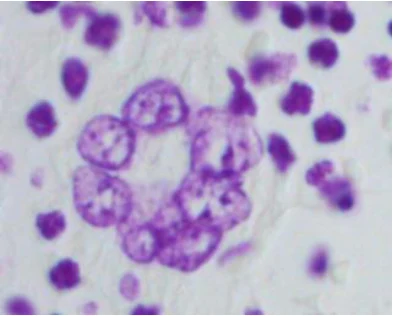
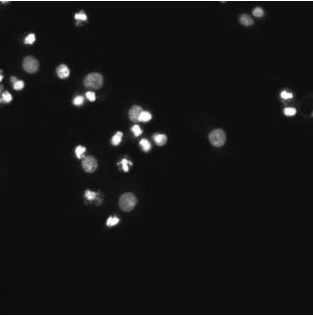
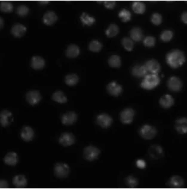
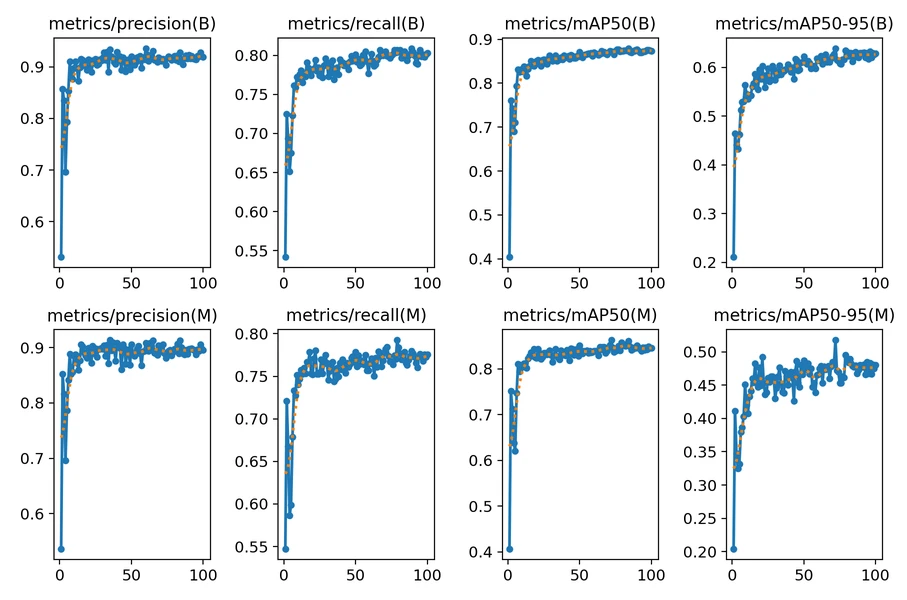
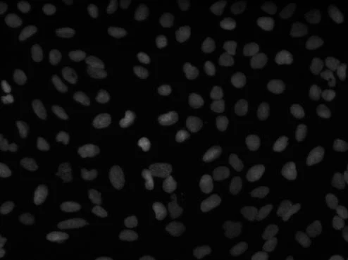
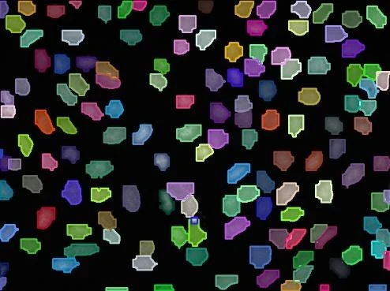
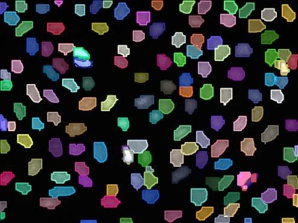

ICRIRET 2025 · 3rd International Conference on Recent and Innovative Results in Engineering and Technology · Konya
Summary
A head-to-head comparison of two real-time instance segmentation models on cell nuclei. The newer, attention-based YOLOv12s-seg loses to the more mature YOLOv11s-seg on accuracy and on speed.
DSB2018: 670 images from bright-field and fluorescence microscopy, 10 to 300+ nuclei each.
Same small variants, 512×512 input, batch 16, 100 epochs, same augmentation and GPU.
Architectural maturity and training stability can outweigh lightweight novelty.
I · Introduction
One mask: "nucleus" vs "background". Touching nuclei become one blob.
One mask per nucleus, so each can be counted and measured. This is what YOLO-seg models produce.
I · Related Work · Interactive
Results as reported by each study, on different datasets and metrics, so they are not directly comparable. Click a column header to sort.
| Method | Family | Key idea | Reported result | Ref. |
|---|---|---|---|---|
| BAWGNet | U-Net | wavelet-guided attention, boundary-aware unit | Dice 90.82% (DSB-2018) | 5 |
| ConDANet | U-Net | contourlet-driven attention, wavelet pooling | Dice 88.9 / 81.71 / 75.12% (3 datasets) | 6 |
| ASRDNet | U-Net | dilated separable residual blocks, channel attention | Dice 0.9129 (DSB-2018) | 7 |
| CBAM-Residual U-Net | U-Net | residual convolutions with CBAM attention | above SOTA on DSB-2018, GlaS, TNBC | 8 |
| M-UNet | U-Net | parallel kernel heads, shearlet unsharp masking | IoU 0.8325, F1 0.9086 | 9 |
| U-Net / W-U-Net | U-Net | resizing, normalization, augmentation | Dice 0.9916, IoU 0.9675 | 10 |
| Swin + GCFM | Transformer / graph | graph convolutional feature fusion | above SOTA on DSB-2018, LIVECell | 11 |
| Multi-task network | Transformer / graph | bottleneck transformer, distance maps, stain transfer | better on NuInsSeg, MoNuSeg, DSB-2018 | 12 |
| DPGNet | Transformer / graph | edge difference attention, uncertainty maps | best Boundary-IoU and HD95; 25.51M params | 13 |
| ASF-YOLO | One-stage | scale-sequence fusion, channel-position attention | mask mAP 0.887, 47.3 FPS (DSB-2018) | 14 |
| YOLACT | One-stage | prototype masks + coefficients, no repooling | mAP 29.8 at 33.5 FPS (COCO) | 15 |
| Improved BlendMask | One-stage | dilated and context aggregation, ranking loss | +3.6% AP (DSB-2018) | 16 |
| U-Net++ + watershed | Clinical tool | GUI with interactive refinement and reports | F1 0.917, IoU 0.846 (DSB-2018) | 17 |
| GA-UNet | Clinical tool | genetic algorithm shrinks U-Net to < 1% of parameters | accuracy 95.96% (DSB-2018) | 18 |
Common limits: heavy computation, overfitting on small sets, sensitivity to stain normalization. Gap: no direct YOLOv11-seg vs YOLOv12-seg comparison on nuclei.
II.A · Dataset and Preprocessing



Fig. 1: sample training images. Stains, modality and density change from image to image.
536 training and 134 validation (80/20, stratified by nuclei density).
Bright-field and fluorescence, various stains, magnifications and cell types.
256×256 to 1080×1080 pixels; 10 to more than 300 nuclei per image.
Resized to 512×512 with padding to keep the aspect ratio; one binary mask per nucleus.
II.B–C · Architectures
yolo11s-seg.ptyolo12s-seg.yaml, i.e. from scratch with COCO initializationII.D · Table 1 · Interactive
III.A · Experimental Setup · Table 2
| Parameter | Value |
|---|---|
| Optimizer | AdamW (lr = 0.002) |
| Batch size | 16 |
| Input resolution | 512×512 |
| Epochs | 100, cosine learning-rate schedule |
| Augmentation | mosaic, HSV, flip |
| Precision | automatic mixed precision (AMP) |
Laptop: NVIDIA GeForce RTX 3050 (6 GB VRAM), Intel CPU with 8 cores / 12 threads, 16 GB RAM, CUDA 11.8, PyTorch.
A 6 GB consumer GPU is close to what a small lab or clinic would use; memory and latency differences are felt directly.
III.B · Fig. 2 · Interactive
Counts aggregated over the 134 validation images; the background/background cell is not defined for instance matching. Metrics on this slide are computed from the counts.
III.C · Figs. 3–4 · Interactive

Top row: boxes (B). Bottom row: masks (M).
III.D · Metrics · Interactive
A made-up round nucleus, not data from the paper. mAP@0.5:0.95 averages the AP at ten IoU thresholds from 0.50 to 0.95, so it rewards tight boundaries.
III.D–E · Tables 3–4 · Interactive
III.E · Fig. 5 · Interactive



Across the samples, YOLOv11s-seg keeps tight boundaries and separates instances; YOLOv12s-seg shows boundary artifacts, missed small nuclei and occasional merging of adjacent nuclei.
IV · Discussion
The PAN neck aligns multi-scale features well, which matters for nuclei that range from a few pixels to large blobs.
A tuned, pretrained checkpoint against a YAML build with COCO initialization: YOLOv11s-seg converges earlier (epoch 88 vs 98).
FlashAttention and 91 more layers bring no gain here, yet cost memory (5.52 vs 4.62 GB) and latency (11.3 vs 6.3 ms).
The gap is small at IoU 0.5 and grows at strict thresholds: mask quality, not detection, separates the models.
IV · Conclusion and Future Work
YOLOv11-seg combined with domain-specific attention mechanisms.
Cross-dataset tests on multi-organ histopathology cohorts.
Interactive refinement interfaces for clinical adoption.
IV · Discussion
References
See the full paper for the complete reference list. Figures on these slides are from the paper.